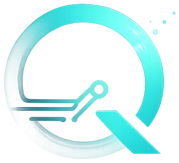

QuoreliaQuorelia monitors, alerts, diagnoses, and reports on your solar, wind, and ESS assets — continuously and automatically, in English or Spanish.
Built for asset owners, EPCs, and O&M teams managing solar, wind, and battery storage
Each pillar feeds the next — so nothing sits unwatched between reports.
Real-time visibility into every plant, inverter, rack, and channel — solar, wind, or ESS.
Automatic alarms the moment a threshold is breached, a channel drops, or a fault appears.
Findings are traced to source data and provenance — not just flagged and left for someone to chase.
Daily and monthly reports build themselves, in English and Spanish, ready for stakeholders.
Quorelia is a monitoring and automated daily/monthly reporting layer on top of your existing SCADA — not a maintenance dispatch or field-service tool. It watches your plants, calculates the figures your contracts and stakeholders need, and only publishes what it can defend.
Contractual availability, production, SOC, and downtime reports generated straight from plant data on your schedule — no manual pull, no manual formatting.
Every number carries its source channels, transformation, and assumptions. Each figure is re-derived by an independent path before publishing — if the two don't match, it doesn't go out.
Every report and client portal renders in English and Spanish out of the box — no separate translation workflow.
When data coverage falls below a defensible threshold, Quorelia withholds the contractual verdict instead of guessing — and says exactly why, on the first page, not in an appendix.
Branded PDF and dashboard views your clients can open directly — no reformatting on your side.
Integrates with common SCADA, inverter, and BESS/BMS monitoring platforms — solar or battery storage — so you keep your existing backend.
Quorelia raises automatic alerts the moment something needs attention — an inverter fault, a comms drop, a threshold breach — and routes them to the right owner. Your team gets dispatched to do the actual maintenance instead of staring at a screen 24/7/365.
Illustrative examples — a live-style dashboard and a sample daily report, built the same way real Quorelia output is: from data, not from a template.
Six mutually exclusive states, and none of them relies on color alone — each carries its own shape and pattern too, so it survives a bad projector and a colorblind reviewer.
| no data | the channel never responded — 45° hatch |
| withheld | there is data, but not enough to support the claim |
| 0.00 | measured, and it genuinely is zero |
The distinction almost no commercial SCADA gets right — and the one a contractual figure lives or dies on.
With zero confirmed excused events, this figure can only go up from here — and that's stated outright, never implied.
Four steps, running on a schedule you control.
Link your SCADA, inverter, and monitoring feeds — no rip-and-replace.
Quorelia cleans and structures the data across every site and vendor.
Reports build automatically on your schedule — daily, weekly, monthly.
Clients get a branded portal or PDF, in their preferred language.
O&M teams lose hours every week exporting spreadsheets and formatting client decks. Quorelia replaces that with a system that runs itself, so your team spends time on the plants, not the paperwork.
Show us your current O&M report and we'll show you how Quorelia automates it.
Talk to usWhen your plant never sleeps, neither does your monitoring.